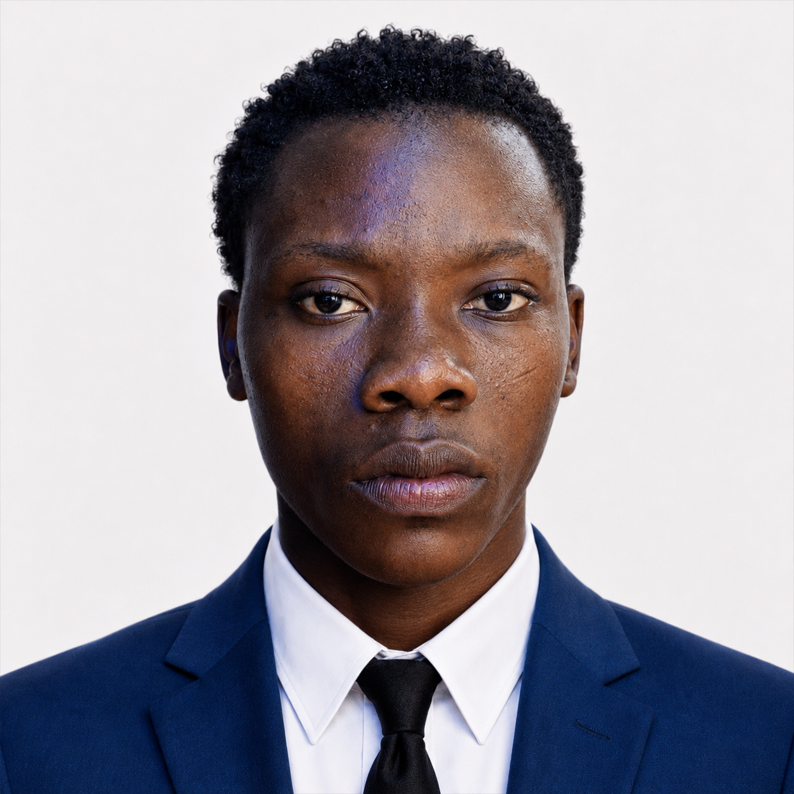

The story of C & D Multitech began with the vision, curiosity, and determination of its founder, Caleb Basil.
Long before C & D Multitech became a registered technology company, Caleb’s journey began while he was still in secondary school.
During this period, he had the opportunity to learn from a Malaysian university lecturer who introduced him to advanced computer skills, research, and analytical thinking. The experience gave Caleb more than technical knowledge—it developed in him a passion for deep research, problem-solving, and understanding how technology works beneath the surface.
After his early training, Caleb began exploring Lagos and putting his knowledge into practice. He started repairing mobile phones by the roadside, using every device as an opportunity to learn, experiment, and improve his technical ability.
But Caleb’s ambition went far beyond phone repairs. Driven by his curiosity, he began exploring different areas of technology, including software, hardware, cryptocurrency, web development, and digital innovation. He even developed a cryptocurrency-related website as part of his journey as a researcher, creator, and technology enthusiast.
Over the years, Caleb developed a particular passion for Apple devices, especially the iPhone.
He dedicated significant time to studying iPhone hardware, software, components, architecture, common faults, diagnostics, and repair techniques. This deep specialization helped establish him as a highly experienced iPhone and laptop repair specialist, with expertise covering both hardware and software.
While iPhone technology remains a major area of focus, C & D Multitech also works extensively with Android devices, laptops, and other technology products.
As Caleb’s knowledge and experience grew, he recognized an opportunity to build something bigger—a professional technology company capable of providing reliable, high-quality solutions to individuals, businesses, and organizations.
That vision became C & D Multitech.
What began with Caleb Basil learning and repairing devices on the streets of Lagos has grown into a registered technology company with a growing team, multiple branches, and operations extending across Lagos, Ghana, and other parts of Nigeria.
The company has had the privilege of working with a wide range of customers, including notable Nigerian entertainers, public figures, businesses, and thousands of everyday technology users. Its experience includes working with personalities such as Naira Marley, Buju (BNXN), Zino, Tee Dollar, and many other known and emerging personalities.
C & D Multitech has also developed strong connections within the international technology supply chain, particularly with suppliers in China.
Through direct relationships with suppliers, the company is able to source a wide range of phone components and replacement parts while maintaining a strong focus on quality and reliability.
C & D Multitech has also established partnerships and business relationships with brands and companies including Oraimo, New Age, and other technology-related organizations.
These connections allow the company to combine international access to technology and components with local technical expertise.
Today, C & D Multitech is more than a phone repair business.
It is a technology-driven company built around research, technical expertise, innovation, and customer service.
With a growing team and the capacity to handle a high volume of device repairs, the company continues to provide solutions for iPhones, Android devices, laptops, and other technology-related challenges.
At the heart of the company is the same philosophy that has guided Caleb Basil from the beginning:
Learn deeply. Understand the problem. Provide the right solution.
From a secondary-school student learning computer skills, to roadside phone repairs in Lagos, to international experience and the creation of a growing technology company, Caleb Basil’s journey is a story of curiosity, persistence, learning, and innovation.
And for C & D Multitech, the journey is far from over.
C & D Multitech
Built on Knowledge. Driven by Technology. Focused on Solutions.
Behind C & D Multitech is Caleb Basil, a technology entrepreneur, researcher, and businessman whose interests extend far beyond the technology industry.
Caleb Basil was born on June 22, 2006. From an early age, he developed a strong curiosity about technology, business, research, and how complex systems work. His journey eventually led to the creation and growth of C & D Multitech, but technology represents only one part of his wider entrepreneurial interests.
While Caleb is publicly associated with C & D Multitech, his entrepreneurial activities extend into other areas, including real estate and automobile businesses.
His approach to business is deliberately private. Rather than publicly displaying every project, investment, or business activity, Caleb maintains a relatively low profile and prefers to focus on building businesses, developing systems, creating relationships, and identifying opportunities.
Some aspects of his business activities remain private, while others continue to develop behind the scenes. This quiet approach has become part of his personal philosophy: build first, reveal later.
Caleb's strongest public area of expertise remains technology. Through C & D Multitech, he has developed experience across smartphones, computers, hardware, software, diagnostics, repairs, web development, digital systems, and technology research.
His interest goes beyond repairing devices. He has explored the development of software and online platforms designed to make business operations more efficient and accessible. Some of the systems and software projects he has worked on remain under development or have not yet been publicly released.
His long-term vision is to integrate technology into different areas of his businesses, creating systems that allow services, information, operations, and customers to connect remotely.
Another important part of Caleb's business strategy is his network of international suppliers and business contacts. Through C & D Multitech, he has developed relationships with suppliers and manufacturers, particularly within China's technology supply chain.
These relationships provide access to technology components, replacement parts, products, and other resources directly from established suppliers and manufacturers.
Building direct relationships within the supply chain allows Caleb to better understand product sourcing, pricing, quality, and availability while creating opportunities for C & D Multitech to expand its operations.
Outside the technology industry, Caleb is also associated with Lavator Luxe, a real-estate venture focused on property sourcing and connecting clients with available properties.
Through his real-estate network, the business focuses on helping clients discover properties that match their individual needs, preferences, and budgets.
Its property network covers locations across Lagos State, with access to information about apartments, newly developed properties, and other real-estate opportunities.
Rather than limiting clients to a fixed selection of properties, the business can also assist in sourcing properties according to specific requirements. This makes the service useful for clients looking to buy, rent, or explore particular types of property.
The long-term vision is to expand the platform beyond Lagos and create a broader property network covering additional states.
Caleb's entrepreneurial interests also extend into the automobile industry through Just Drive Autos, a car-dealing business focused on connecting customers with vehicles and automobile opportunities.
The automobile venture forms another part of his broader business portfolio and reflects his interest in building businesses across different industries rather than concentrating on technology alone.
Caleb Basil's business philosophy is built around knowledge, research, relationships, and long-term development. His public presence represents only a portion of the projects and interests he works on.
From learning technology at a young age and repairing mobile phones, to building C & D Multitech, developing software, establishing international supplier relationships, exploring real estate, and entering the automobile industry, his journey reflects a continuous search for new opportunities.
Many of his future projects remain private or are still under development. As these projects mature, some may eventually become part of the wider ecosystem of businesses and digital platforms he is building.
“ Learn deeply. Build quietly. Create solutions that last. ”
Caleb's family history is an important part of the personal foundation behind his journey. His father, Basil Edet Umoh, was among the soldiers who served and fought during the Nigerian Civil War, also known as the Biafran War.
Basil Edet Umoh later retired from military service and passed away in 2012. His experiences and values became an important part of the family's history. He was also known for maintaining discipline within the family, instilling values of discipline, resilience, responsibility, and perseverance.
Caleb's decision to maintain a low profile is also closely connected to his personal research journey. Rather than seeking constant attention or publicly revealing every project, idea, or business activity, he prefers to observe, study, research, develop, and understand things deeply before bringing them into the public space.
For Caleb, staying private is not simply about avoiding attention. It is part of a deliberate approach to learning and building. Much of his work involves research, experimentation, relationships, technology, and ideas that may take considerable time to develop before they are ready to be revealed.
The discipline passed down through his family, combined with his curiosity, research mindset, and preference for working quietly, has become an important part of Caleb Basil's identity as an entrepreneur and researcher.

The Young Mind Shaping the Future
TV whisperer. Logic board whisperer. Data savior.
Km 15, Elegushi Plaza, Lekki - Epe Expy, Lekki 106104, Lagos